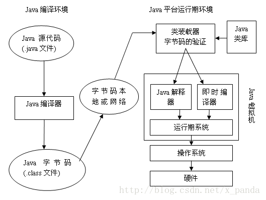
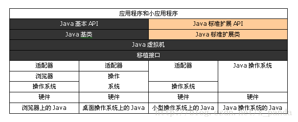
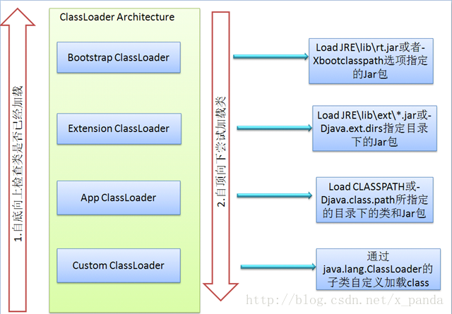
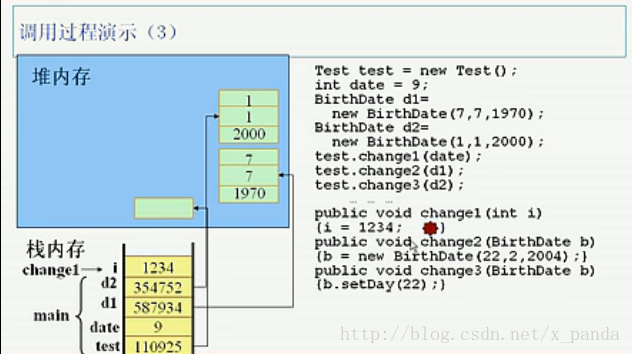
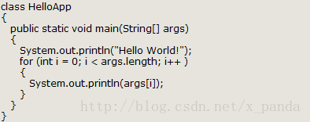

前言
暑假期间看了一段时间的《深入JVM虚拟机》，再加上网上一些归纳比较好的知识，对jvm也是可以说上几句，这篇博文更多的是整理其他博主的博文,也感谢互联网让我站在了巨人的肩膀上。
先放上参考链接吧
内容
作为一名Java使用者，掌握JVM的体系结构也是必须的。 说起Java，人们首先想到的是Java编程语言，然而事实上，Java是一种技术，它由四方面组成：Java编程语言、Java类文件格式、Java虚拟机和Java应用程序接口(Java API)。它们的关系如下图所示：

运行期环境代表着Java平台，开发人员编写Java代码(.java文件)，然后将之编译成字节码(.class文件)，再然后字节码被装入内存，一旦字节码进入虚拟机，它就会被解释器解释执行，或者是被即时代码发生器有选择的转换成机器码执行。
Java平台由Java虚拟机和Java应用程序接口搭建，Java语言则是进入这个平台的通道，用Java语言编写并编译的程序可以运行在这个平台上。这个平台的结构如下图所示：

在Java平台的结构中, 可以看出，Java虚拟机(JVM) 处在核心的位置，是程序与底层操作系统和硬件无关的关键。它的下方是移植接口，移植接口由两部分组成：适配器和Java操作系统, 其中依赖于平台的部分称为适配器；JVM 通过移植接口在具体的平台和操作系统上实现；在JVM 的上方是Java的基本类库和扩展类库以及它们的API， 利用Java API编写的应用程序(application) 和小程序(Java applet) 可以在任何Java平台上运行而无需考虑底层平台, 就是因为有Java虚拟机(JVM)实现了程序与操作系统的分离，从而实现了Java 的平台无关性。
JVM在它的生存周期中有一个明确的任务，那就是运行Java程序，因此当Java程序启动的时候，就产生JVM的一个实例；当程序运行结束的时候，该实例也跟着消失了。下面我们从JVM的体系结构和它的运行过程这两个方面来对它进行比较深入的研究。
1、Java虚拟机的体系结构
·每个JVM都有两种机制：
①类装载子系统：装载具有适合名称的类或接口
②执行引擎：负责执行包含在已装载的类或接口中的指令
·每个JVM都包含：
方法区、Java堆、Java栈、本地方法栈、指令计数器及其他隐含寄存器

对于JVM的学习，在我看来这么几个部分最重要：
Java代码编译和执行的整个过程
JVM内存管理及垃圾回收机制
下面分别对这几部分进行说明：
2、Java代码编译和执行的整个过程
也正如前面所说，Java代码的编译和执行的整个过程大概是：开发人员编写Java代码(.java文件)，然后将之编译成字节码(.class文件)，再然后字节码被装入内存，一旦字节码进入虚拟机，它就会被解释器解释执行，或者是被即时代码发生器有选择的转换成机器码执行。
（1）Java代码编译是由Java源码编译器来完成，也就是Java代码到JVM字节码（.class文件）的过程。 流程图如下所示：

（2）Java字节码的执行是由JVM执行引擎来完成，流程图如下所示：

Java代码编译和执行的整个过程包含了以下三个重要的机制:
·Java源码编译机制
·类加载机制
·类执行机制
（1）Java源码编译机制
Java 源码编译由以下三个过程组成：
①分析和输入到符号表
②注解处理
③语义分析和生成class文件
流程图如下所示：

最后生成的class文件由以下部分组成：
①结构信息：包括class文件格式版本号及各部分的数量与大小的信息
②元数据：对应于Java源码中声明与常量的信息。包含类/继承的超类/实现的接口的声明信息、域与方法声明信息和常量池
③方法信息：对应Java源码中语句和表达式对应的信息。包含字节码、异常处理器表、求值栈与局部变量区大小、求值栈的类型记录、调试符号信息
（2）类加载机制 JVM的类加载是通过ClassLoader及其子类来完成的，类的层次关系和加载顺序可以由下图来描述：

①Bootstrap ClassLoader
负责加载$JAVA_HOME中jre/lib/rt.jar里所有的class，由C++实现，不是ClassLoader子类
②Extension ClassLoader
负责加载java平台中扩展功能的一些jar包，包括$JAVA_HOME中jre/lib/*.jar或-Djava.ext.dirs指定目录下的jar包
③App ClassLoader
负责记载classpath中指定的jar包及目录中class
④Custom ClassLoader
属于应用程序根据自身需要自定义的ClassLoader，如tomcat、jboss都会根据j2ee规范自行实现ClassLoader
加载过程中会先检查类是否被已加载，检查顺序是自底向上，从Custom ClassLoader到BootStrap ClassLoader逐层检查，只要某个classloader已加载就视为已加载此类，保证此类只所有ClassLoader加载一次。而加载的顺序是自顶向下，也就是由上层来逐层尝试加载此类。
（3）类执行机制
JVM是基于堆栈的虚拟机。JVM为每个新创建的线程都分配一个堆栈.也就是说,对于一个Java程序来说，它的运行就是通过对堆栈的操作来完成的。堆栈以帧为单位保存线程的状态。JVM对堆栈只进行两种操作:以帧为单位的压栈和出栈操作。
JVM执行class字节码，线程创建后，都会产生程序计数器（PC）和栈（Stack），程序计数器存放下一条要执行的指令在方法内的偏移量，栈中存放一个个栈帧，每个栈帧对应着每个方法的每次调用，而栈帧又是有局部变量区和操作数栈两部分组成，局部变量区用于存放方法中的局部变量和参数，操作数栈中用于存放方法执行过程中产生的中间结果。栈的结构如下图所示：

3、JVM内存管理及垃圾回收机制
JVM内存结构分为：方法区（method），栈内存（stack），堆内存（heap），本地方法栈（java中的jni调用），结构图如下所示：

（1）堆内存（heap）
所有通过new创建的对象的内存都在堆中分配，其大小可以通过-Xmx和-Xms来控制。 操作系统有一个记录空闲内存地址的链表，当系统收到程序的申请时，会遍历该链表，寻找第一个空间大于所申请空间的堆结点，然后将该结点从空闲结点链表中删除，并将该结点的空间分配给程序，另外，对于大多数系统，会在这块内存空间中的首地址处记录本次分配的大小，这样代码中的delete语句才能正确的释放本内存空间。但由于找到的堆结点的大小不一定正好等于申请的大小，系统会自动的将多余的那部分重新放入空闲链表中。这时由new分配的内存，一般速度比较慢，而且容易产生内存碎片，不过用起来最方便。另外，在WINDOWS下，最好的方式是用VirtualAlloc分配内存，它不是在堆，也不是在栈，而是直接在进程的地址空间中保留一块内存，虽然这种方法用起来最不方便，但是速度快，也是最灵活的。堆内存是向高地址扩展的数据结构，是不连续的内存区域。由于系统是用链表来存储的空闲内存地址的，自然是不连续的，而链表的遍历方向是由低地址向高地址。堆的大小受限于计算机系统中有效的虚拟内存。由此可见，堆获得的空间比较灵活，也比较大。
（2）栈内存（stack）
在Windows下, 栈是向低地址扩展的数据结构，是一块连续的内存区域。这句话的意思是栈顶的地址和栈的最大容量是系统预先规定好的，在WINDOWS下，栈的大小是固定的（是一个编译时就确定的常数），如果申请的空间超过栈的剩余空间时，将提示overflow。因此，能从栈获得的空间较小。只要栈的剩余空间大于所申请空间，系统将为程序提供内存，否则将报异常提示栈溢出。 由系统自动分配，速度较快。但程序员是无法控制的。
堆内存与栈内存需要说明：
基础数据类型直接在栈空间分配，方法的形式参数，直接在栈空间分配，当方法调用完成后从栈空间回收。引用数据类型，需要用new来创建，既在栈空间分配一个地址空间，又在堆空间分配对象的类变量 。方法的引用参数，在栈空间分配一个地址空间，并指向堆空间的对象区，当方法调用完成后从栈空间回收。局部变量new出来时，在栈空间和堆空间中分配空间，当局部变量生命周期结束后，栈空间立刻被回收，堆空间区域等待GC回收。方法调用时传入的literal参数，先在栈空间分配，在方法调用完成后从栈空间收回。字符串常量、static在DATA区域分配，this在堆空间分配。数组既在栈空间分配数组名称，又在堆空间分配数组实际的大小。
如：

（3）本地方法栈（java中的jni调用）
用于支持native方法的执行，存储了每个native方法调用的状态。对于本地方法接口，实现JVM并不要求一定要有它的支持，甚至可以完全没有。Sun公司实现Java本地接口(JNI)是出于可移植性的考虑，当然我们也可以设计出其它的本地接口来代替Sun公司的JNI。但是这些设计与实现是比较复杂的事情，需要确保垃圾回收器不会将那些正在被本地方法调用的对象释放掉。
（4）方法区（method）
它保存方法代码(编译后的java代码)和符号表。存放了要加载的类信息、静态变量、final类型的常量、属性和方法信息。JVM用持久代（Permanet Generation）来存放方法区，可通过-XX:PermSize和-XX:MaxPermSize来指定最小值和最大值。（补充：java8中已经移除永久代（permGen），使用元空间（metaspace），元空间位于本地内存（哈哈），主要是考虑到永久代大小比较难估计，降低了内存利用率，例如两个不同的项目都用到了同一个开源包，其class文件之前是存在各自的永久代中，而现在是只有一个，就是在元空间中）
垃圾回收机制
堆里聚集了所有由应用程序创建的对象，JVM也有对应的指令比如 new, newarray, anewarray和multianewarray，然并没有向 C++ 的 delete，free 等释放空间的指令，Java的所有释放都由 GC 来做，GC除了做回收内存之外，另外一个重要的工作就是内存的压缩，这个在其他的语言中也有类似的实现，相比 C++ 不仅好用，而且增加了安全性，当然她也有弊端，比如性能这个大问题。
4、Java虚拟机的运行过程示例
上面对虚拟机的各个部分进行了比较详细的说明，下面通过一个具体的例子来分析它的运行过程。
虚拟机通过调用某个指定类的方法main启动，传递给main一个字符串数组参数，使指定的类被装载，同时链接该类所使用的其它的类型，并且初始化它们。例如对于程序：

编译后在命令行模式下键入： java HelloApp run virtual machine
将通过调用HelloApp的方法main来启动java虚拟机，传递给main一个包含三个字符串”run”、”virtual”、”machine”的数组。现在我们略述虚拟机在执行HelloApp时可能采取的步骤。
开始试图执行类HelloApp的main方法，发现该类并没有被装载，也就是说虚拟机当前不包含该类的二进制代表，于是虚拟机使用ClassLoader试图寻找这样的二进制代表。如果这个进程失败，则抛出一个异常。类被装载后同时在main方法被调用之前，必须对类HelloApp与其它类型进行链接然后初始化。链接包含三个阶段：检验，准备和解析。检验检查被装载的主类的符号和语义，准备则创建类或接口的静态域以及把这些域初始化为标准的默认值，解析负责检查主类对其它类或接口的符号引用，在这一步它是可选的。类的初始化是对类中声明的静态初始化函数和静态域的初始化构造方法的执行。一个类在初始化之前它的父类必须被初始化。整个过程如下：